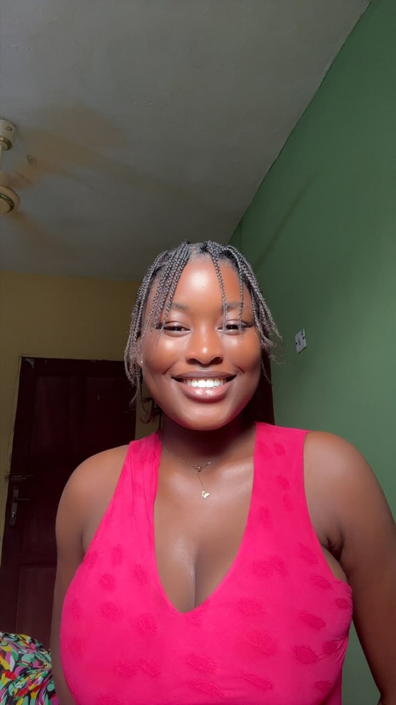

I blend strategic content, storytelling, and digital growth to turn social spaces into thriving communities across YouTube, LinkedIn, and Instagram.

Substack Essayist & Strategist
A curated collection of digital strategy, storytelling, and creative campaign highlights.
A personal archive of memory, restraint, and womanhood.
"A look back through the layers of identity—tracing every version of myself I have lived through, and honoring the paths left untaken."
Read on SubstackAuthentic vlog content, daily routines, personal development, and transparent storytelling that resonates deeply with young audiences.
Trying my best, even when it doesn’t feel like enough.
"Starting from scratch is humiliating in a way no one prepares you for, but even when I feel behind, I haven’t given up."
Read on SubstackCurating engaging video shorts, strategic sales messaging, and AI-backed brand growth for modern businesses.
View Instagram ProfileAn ode to future apartments, soft mornings, and becoming.
"The version of me that doesn’t exist yet... Maybe that’s what hope is. A tiny crush on your future."
Read on SubstackWhere strategy meets narrative.